Simplicity Enhancements
Contributors
 Download PDF of this page
Download PDF of this page
This section covers ONTAP 9.8 enhancements that improve simplicity. This includes the following:
-
ONTAP System Manager updates
-
ONTAP upgrade and tech refresh improvements
-
REST API enhancements
System Manager Enhancements
ONTAP 9.7 introduced a revamp of the System Manager GUI, with the intention of simplifying the way admins manage ONTAP basic operations, such as storage provisioning and day-to-day operations. The new GUI also leverages REST APIs, which were added in ONTAP 9.6. In ONTAP 9.8, the System Manager classic view has been removed.
One of the major differences between the interfaces is the dashboard, which is the first page you reach when you first log in to NetApp ONTAP System Manager.
The following graphics show a side-by-side comparison of the classic and new versions of the System Manager dashboard.
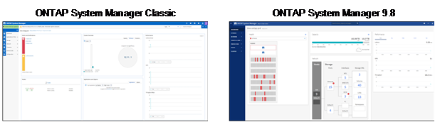
When we look closer, we can see a few major differences.
Health/Alerts
When you first log into Classic System Manager, the top left corner has a list of cluster and node faults. These are summarized into clickable links. When you click one of the links, you get redirected to another page in System Manager.
You also had a separate area that shows the cluster HA state to see whether a node has failed over. In the following images, we see the dashboard view and what we see when we click on one of the links―in this case, our failed disks.
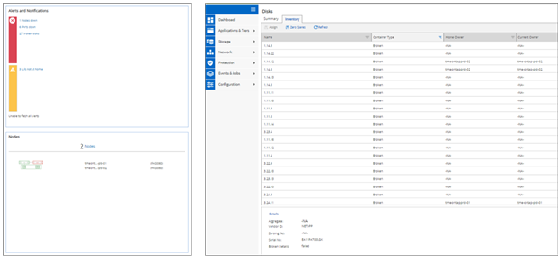
To see other alerts, you must navigate back to the dashboard, which takes time and extra clicks. One of the goals of the new System Manager view is to simplify this process.
The following figure shows the new System Manager dashboard. The two main differences for the health and alert views are that we now have the node HA state and alerts in the same window, and, rather than clicking away from the main dashboard, the alerts are now in a drop-down box.

Capacity Views
Extra clicks are also reduced for capacity views. In classic ONTAP System Manager, the capacity and storage efficiency ratios were found under Cluster Overview and had tabs to click around to find information. The new System Manager view consolidates the storage efficiency ratios and capacity views into a single graphic.
| The new UI leverages logical used space and physical available space. |
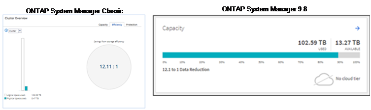
The data protection views have been moved to their own dashboard under Protection. This page provides deeper, more granular looks at the data protection in the cluster and also provides a location to leverage the new SnapMirror Business Continuity (SM-BC).
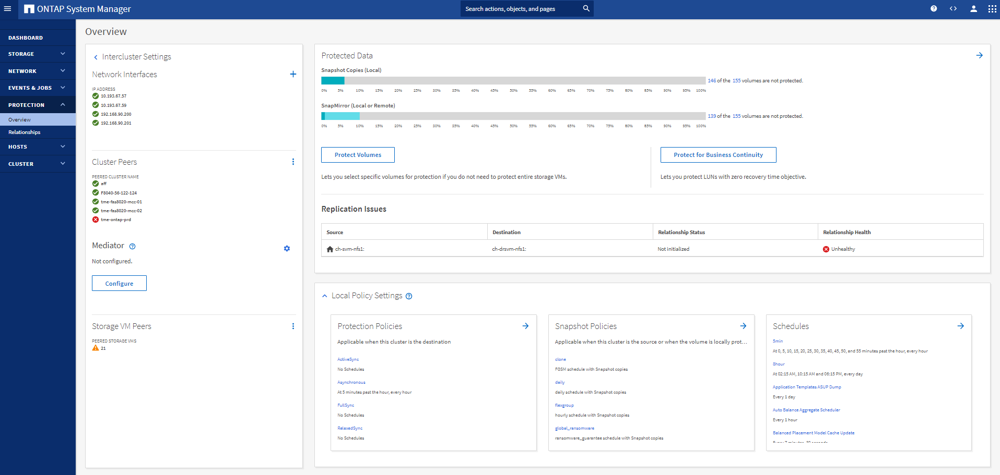
Network Visualization
ONTAP System Manager 9.8 also removes the Application and Objects view in favor of a new Network Visualization view that shows network topology for the cluster, as well as red X’s when a port is down.
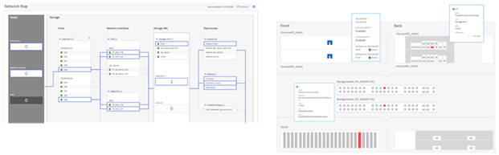
Performance Views
Performance data graphs in System Manager now retain data for the cluster up to 1 year, rather than having classic System Manager performance data only be available while you are logged in. In ONTAP System Manager 9.8, you can now click on the hour, day, week, month, or year. There is also a way to download performance data to a CSV.
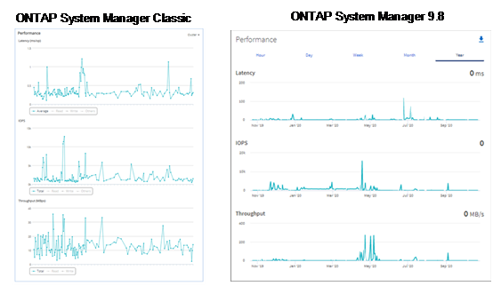
File System Analytics
In high file- count environments, trying to find information about folder capacity, data age, and file counts usually requires time-intensive commands or scripts that run serial operations over NAS protocols, such as ls, du, find, and stat.
ONTAP System Manager 9.8 provides a way for admins to find out file system information in any NAS storage volume quickly and easily by enabling a low-impact scanner for each volume. This scanner crawls the ONTAP file system in the background with a low priority job and delivers a wealth of information that is available as soon as you navigate to a volume in System Manager 9.8 or later.
Enabling File Systems Analytics is as easy as navigating to the volume you want to scan. Go to Storage > Volumes and then use the search to find your desired volume. Click the volume, and then the Explorer tab.
From here, you see the Enable Analytics link on the right side of the page.
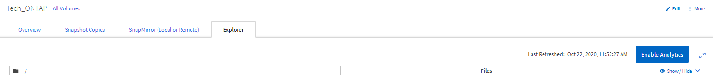
After you click enable, the scanner starts. The time of completion depends on the number of objects in the volume as well as the system load. After it is finished, you see the entire directory structure populated in the System Manager view. This view can be navigated down the directory tree, and it provides access for history information, directory size information, and file sizes.
The following figure shows views from the Tech_ONTAP volume in my cluster, which I use as an archive for NetApp Tech ONTAP Podcast episodes.
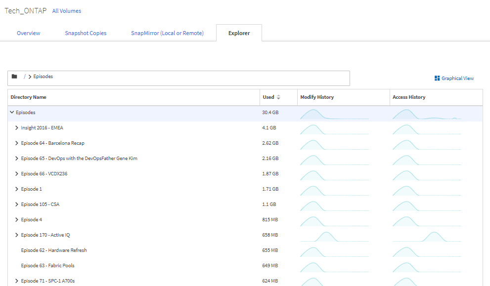
When you click a folder, a file list appears on the right side of the page.
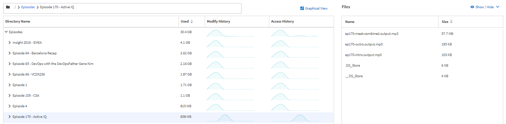
If you choose, you can enable Show Accessed Time to get a look at the last time a file was accessed.
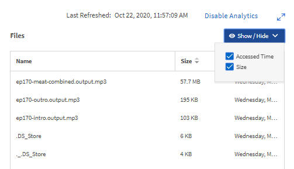
At the bottom of the page, you can see how much data hasn’t been accessed in a year, as well as the directory and file counts in that folder.
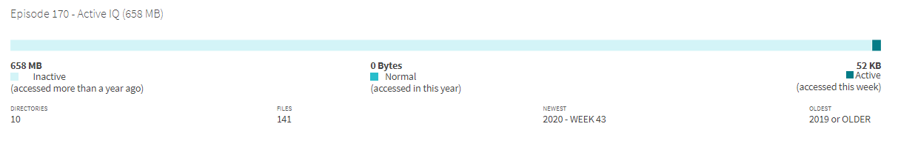
In addition to being able to quickly find file sizes and directory information, this feature also provides information that can help you decide whether NetApp FabricPool technology would be effective in reducing the amount of cold data that is taking up space on your aggregates.
Active NFS Clients
ONTAP 9.7 introduced a way to see which NFS clients were accessing specific volumes in a cluster, as well as which data LIF IP addresses were in use with the nfs connected-clients command. This command is covered in detail in TR-4067: NetApp ONTAP NFS Best Practices and Implementation Guide. This command is useful for scenarios where you need to find out what clients are attached to the storage system, such as upgrades, tech refreshes, or simple reporting.
ONTAP System Manager 9.8 offers a way to see these clients with the GUI, as well as a way to export the list to a .csv file. Navigate to Hosts > NFS Clients and you see a list of NFS clients that were active in the past 48 hours.
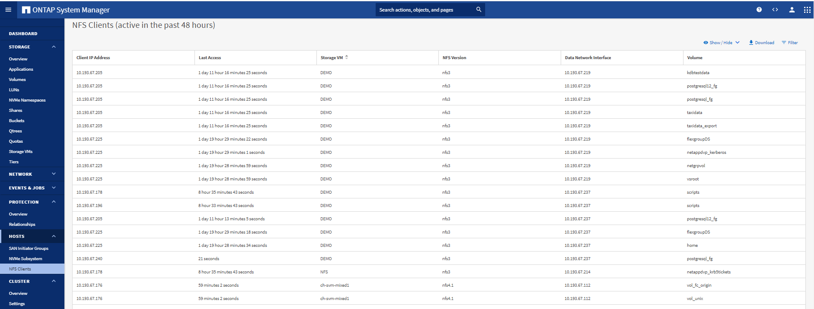
Other System Manager 9.8 Enhancements
ONTAP 9.8 also brings the following enhancements to System Manager:
|
|
The following figure shows MetroCluster and single-click firmware updates.
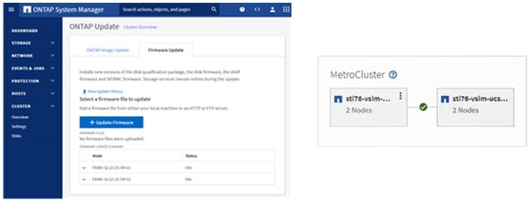
REST API Enhancements
REST API support, added in ONTAP 9.6, enables storage admins to leverage industry standard API calls to ONTAP storage in their automation scripts without needing to interact with the CLI or GUI.
REST API documentation and samples are available with System Manager. Simply navigate to the cluster management interface from a web browser and add docs/api to the address (using HTTPS).
For example:
This page provides an interactive glossary of available REST APIs, as well as a method to generate your own REST API queries.
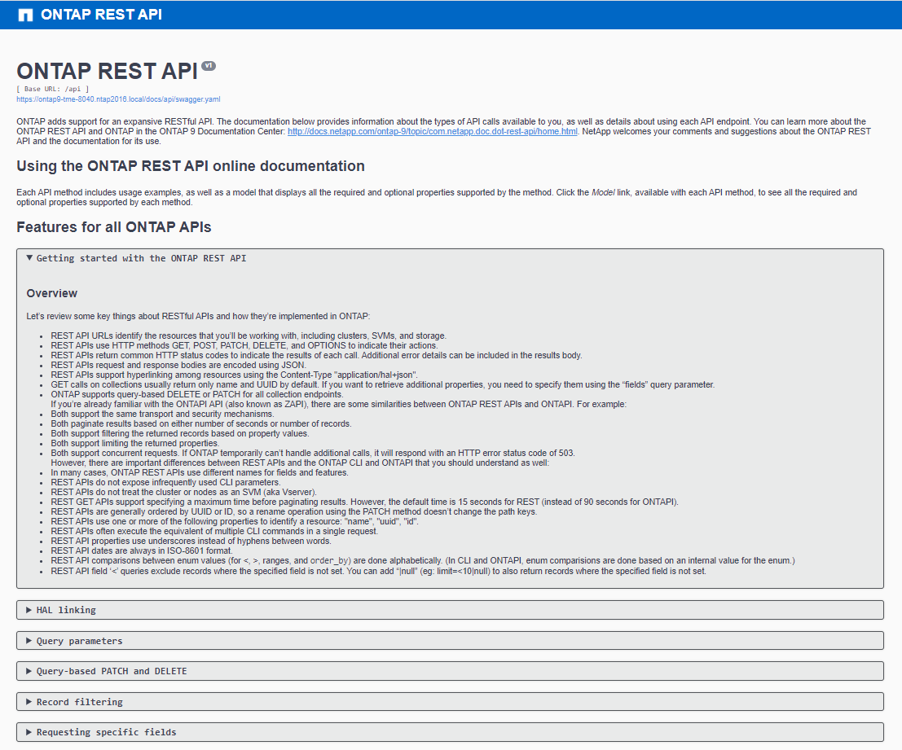
In ONTAP 9.8, REST APIs are now annotated with which version they were added, which helps simplify life when you are trying to keep your scripts working across multiple ONTAP versions.
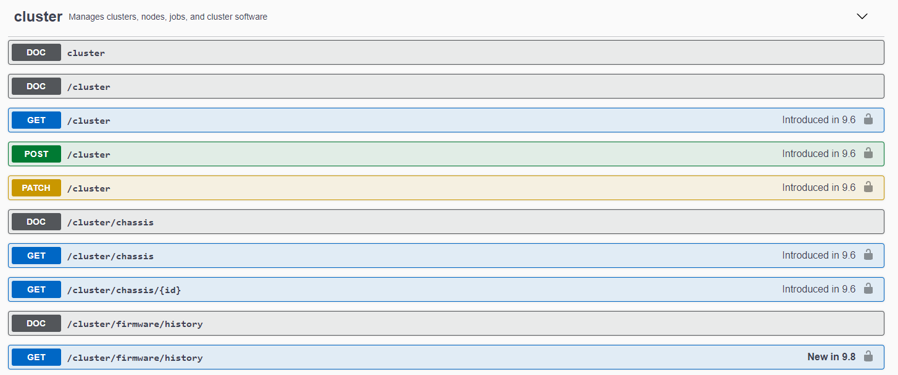
The following table provides a list of new REST APIs in ONTAP 9.8.
Cluster |
Security |
For more information on System Manager updates in ONTAP 9.8 see the Tech ONTAP Podcast Episode 266: NetApp ONTAP System Manager 9.8.
Upgrade and Tech Refresh Enhancements – ONTAP 9.8
Traditionally, ONTAP upgrades have had to happen within one or two major releases to work non-disruptively. For storage administrators who don’t upgrade frequently, this becomes a major headache and logistical nightmare when it’s finally time to upgrade ONTAP. Who wants to upgrade and reboot multiple times in a maintenance window?
ONTAP 9.8 now supports upgrades to ONTAP releases within a two-year window. This means if you want to upgrade from 9.6 to 9.8, you can do that directly without needing to go to ONTAP 9.7.
The following table provides a matrix of NetApp ONTAP version upgrades.
| Starting Point | Direct Upgrade to: |
|---|---|
ONTAP 9.6 |
ONTAP 9.7, ONTAP 9.8 |
ONTAP 9.7 |
ONTAP 9.8, ONTAP 9.n+2 |
ONTAP 9.8 |
ONTAP 9.n+1, ONTAP 9.n+2 |
This simplified upgrade process also provides a way for streamlined head upgrades. When a new hardware node is shipped, it has the latest ONTAP release installed. Previously, if your existing cluster was running an older ONTAP release, you had to either upgrade the existing nodes to the same ONTAP version as the new node or you had to downgrade the new node to the older ONTAP release. And, as a further complication, if the newer hardware could not be downgraded, you were forced to take a maintenance window to upgrade the existing cluster.
With ONTAP 9.8’s 2-year revision window, now you can add new nodes into a cluster that have ONTAP versions within that range and the old nodes automatically upgrade to the new ONTAP release in the background, using the nondisruptive aggregate relocation upgrade process.
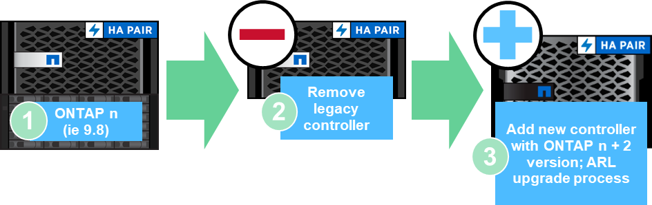
This process also extends into cluster upgrades, where you want to swap out an entire HA pair from a cluster. With the ONTAP 9.8 2-year revision window and nondisruptive volume moves, this is now possible.
The basic steps are as follows:
-
Connect the new systems to an existing cluster, with ONTAP versions within a 2-year window.
-
Use nondisruptive volume move to evacuate the nodes.
-
Unjoin the old nodes from the cluster.
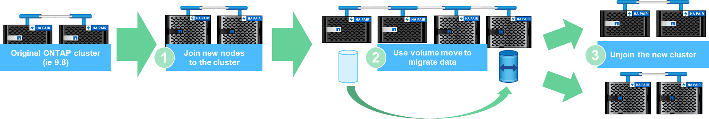
 Edit on GitHub
Edit on GitHub